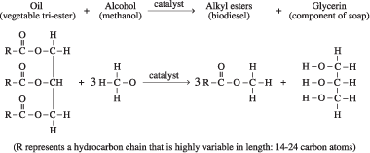

Lesson 1 Lab: Part 1—Making Biodiesel
Biodiesel is an alternative fuel that is made from vegetable and animal oils. It can be used directly in diesel vehicles or blended with traditional petroleum diesel. You will discover during this lab how easy it is to make and store biodiesel. The chemical reaction to produce biodiesel is as follows:

Materials
- lab balance (if using NaOH or KOH base in solid form)
- two 250-mL Erlenmeyer flasks and stoppers
- 100-mL graduated cylinder
- 50-mL graduated cylinder
- disposable pipettes or a turkey baster
- thermometer
- warm water bath (40–60°C)
- 100 mL oil (A different oil for each group is best; possible oils are canola, olive, safflower, lard (warmed to liquid), strained deep fryer oil, grape seed, flaxseed, and sesame.)
Cautionary note: Avoid nut oils because of potential allergies.
- 20 mL methanol
Cautionary note: Methanol is flammable, a dangerous fire risk, and toxic by ingestion.
- ONE of the following base solutions or solid base crystals: 15 mL of 1.0 mol/L NaOH(aq), 15 mL of 1.0 mol/L KOH(aq), 0.6 g of NaOH(s), 0.9 g of KOH(s)
Cautionary note: NaOH and KOH solutions and solids are corrosive.
- safety goggles, gloves, and aprons